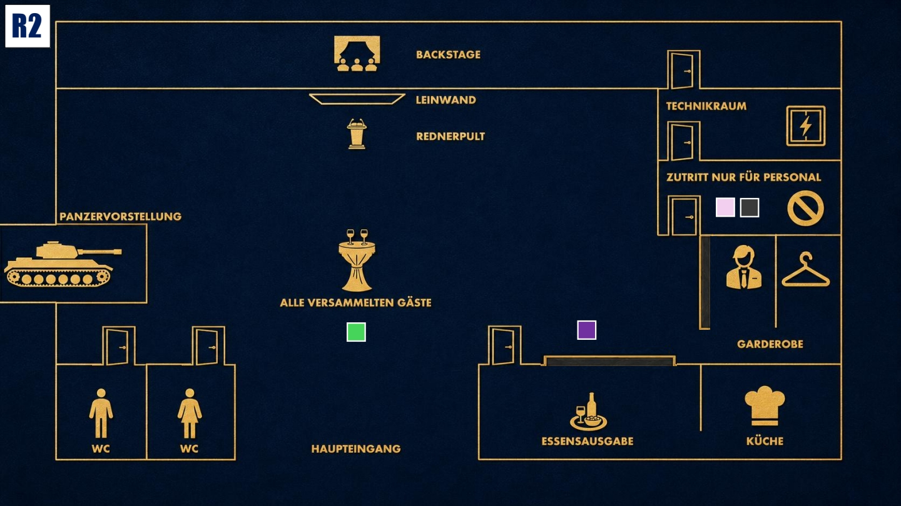

Druck aufbauen
Das Spiel wird intensiver. Nutze neue Informationen klug und bringe andere in Erklärungsnot.

Das Ziel der zweiten Runde
Finde heraus, wer beginnt, die Zusammenhänge zwischen Jake, Diana, dem Blackout und Coles Tod zu erkennen. Beobachte besonders Michael und Zoe und verhindere gleichzeitig, dass deine eigene Rolle bei Jakes Weg zu Stahlmann & Faust sichtbar wird.
Deine Ausgangslage
Du stehst weiter unter Dianas Einfluss. Sie kennt dein berufliches Geheimnis und erwartet, dass du tust, was sie verlangt. Gleichzeitig weißt du, dass Jake nicht zufällig bei Stahlmann & Faust gelandet ist. Du hast ihn beeinflusst, obwohl du dir eingeredet hast, nur helfen zu wollen. Coles Tod macht dir klar, dass jemand zu allem bereit ist. Michael und Zoe solltest du genau beobachten, denn beide könnten erkennen, dass Jake gezielt an diesen Ort gebracht wurde.
Deine Geheimnisse
1. Die Erpressung: Diana Seleznev ist deine Erpresserin. Sie kennt dein berufliches Geheimnis und hat dich gezwungen, Jake in Richtung Stahlmann & Faust zu beeinflussen, damit er dort ist, wo sie ihn haben wollte.
2. Jakes Instabilität: Du hast Jakes Zweifel, seine Eheprobleme und seine innere Unruhe nicht wirklich aufgefangen. Stattdessen hast du zugelassen, dass er anfälliger für das Jobangebot wurde.
Deine Mission
1. Den Mord vom direkten Motiv trennen: Wenn sich Gespräche zu stark auf Coles Ermordung konzentrieren, lenke den Fokus auf den Blackout. Stelle infrage, wer die Dunkelheit nutzen konnte und wer vom technischen Chaos profitiert hat.
2. Deinen Ruf schützen: Wenn andere dich nach deinem Studium, deiner Laufbahn oder deiner therapeutischen Rolle befragen, bleib ruhig und professionell. Erkläre, dass das an diesem Abend irrelevant ist, wo du studiert hast oder weiche anderweitig aus.
Deine Erinnerung an 19:00 Uhr

Zum Vergrößern tippen
Du holst dir etwas zu essen und beobachtest, wie Jake und Luisa kurz nacheinander den Raum „Nur für Mitarbeiter“ betreten. Diana begrüßt die Gäste am Haupteingang.
Mögliche Fragen
An Michael: „Ich habe gesehen, dass du heute früh mit Cole gesprochen hast. Welche Verbindung hattest du wirklich zu ihm?“
An Zoe: „Jake wirkt seit einiger Zeit angespannt. Hast du das auch bemerkt, oder versucht er, dir gegenüber stark zu bleiben?“